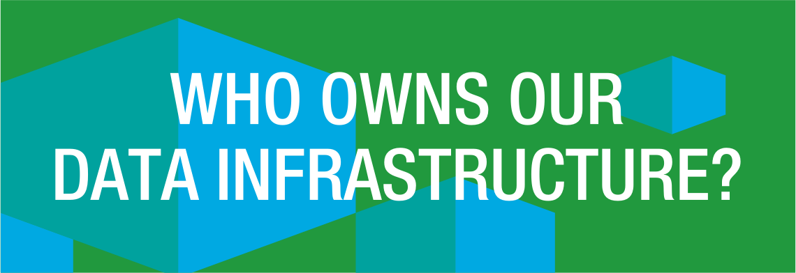
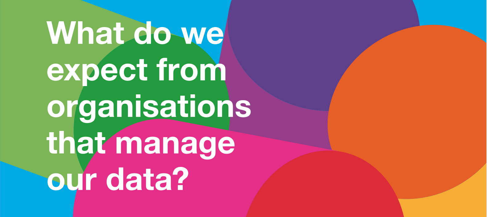

Where next for our data infrastructure work?

Last month we launched a new theme of work around data infrastructure - exploring how data that is important for citizens, communities and countries should be collected, governed and used. Since then, we’ve received lots of ideas, requests and information to help us take this forward.
Data infrastructures are being explored and developed in a variety of contexts: for government services, scholarly research and smart cities. But the term is being used in different ways.
We have begun working on an articulation of data infrastructure that separates out some key concepts. The relationship between data and ‘data infrastructure’ could be thought of in this way:
- Data is a raw material being generated in lots of different ways, by governments, researchers, corporations, individuals and nonprofits - both online and offline.
- Some of that data is data that tells us about, or helps us to administer, our existing physical infrastructure - such as our rail infrastructure. Information about train arrivals and departures, the stations they stop at, speed and delays to the network, types of train and passenger capacity, cost of maintenance and transit is all necessary to help administer our rail infrastructure. We call this data about infrastructure.
- There’s lots of data that can be combined with data about our physical infrastructure to improve products and services and generate new discoveries that improve our lives. Data about where people work and where they live, the time it takes them to get to work, their age and level of income, as well as data about different kinds of trains and forms of transport and energy consumption, can help improve the quality of rail services and provide important insights about how people live. Some of this data might be open and some might closed or shared only for specific purposes. There’s lots of types of data, beyond data about our physical infrastructure, that are essential to help society to function. We call this ‘core data’ - it is the data that forms part of our data infrastructure.
- To ensure these kinds of core data can be widely used, and help to improve services and foster innovation, there need to be frameworks, systems and governance for managing data collection, maintenance and accessibility - in the same way we have frameworks, systems and governance for managing our physical infrastructure. These are what we need to put in place to have a reliable data infrastructure.

In the UK, our focus on data infrastructure builds on work that was explored by APPSI in 2010, was developed in Stephan’s Shakespeare’s proposal for a [‘National Data Strategy’](https://www.gov.uk/government/uploads/system/uploads/attachment_data/file/198752/13-744-shakespeare-review-of-public-sector-information.pdf "National Data Strategy), picked up by the Cabinet Office in its articulation of a National Information Infrastructure and refined by the Open Data User Group. The Danish government began to develop Basic Registries for core public services in 2012 and other countries are working to develop similar approaches.
Over the past few weeks, lots of different pieces of work going on around data infrastructure have been shared with us. This tells us there is a rich array of expertise and experience to help us articulate our own vision for data infrastructure. We have seen Principles for Open Scholarly Infrastructures and been introduced to the well established history of thinking around spatial data infrastructure. In Ottawa at the 3rd International Open Data Conference, in the same week that we published our discussion paper, Tim Davies and Jonathan Gray presented their working paper on reshaping data infrastructures, commenting:
a politics of public information fit for the digital age should go beyond the question of what datasets are disclosed when and to whom, and should additionally ask what information should be collected and generated in the first place, and the role of public information systems in shaping and organising collective life.
Several people have responded directly to our data infrastructure theme (e.g. Richard Vilton of Emu Analytics "Emu Analytics"). While acknowledging the importance of the discussion, Vilton describes the ‘leap of faith’ required from private sector [or any sector] organisations ‘to commit and invest in [data] infrastructure when the return is unquantified.’ Nonetheless, reshaping how organisations maintain and share data - even internally - to improve interoperability and reduce friction is something major data holders across every sector are dealing with.
We cannot presume that all data will be open, or that all essential data that forms part of a community or country’s data infrastructure will be owned by government. Quite the opposite: we recognise that there are already data sets in the private sector that may qualify as part of our data infrastructure. We do take the view that a primary aim for the governance of data that is important to society is to make that data as accessible and widely used as possible, and in a manner that both creates social value and reduces friction in the economy - as we do our physical infrastructure. Open data is one mechanism to realise that future.
Over the coming months, we will be exploring how to show and build data infrastructure - locally, nationally and globally. Our work will be separated into three strands:
- Describing the importance of data infrastructure for different sectors and use cases
- Articulating frameworks for the governance and accessibility of data infrastructure
- Researching tools and systems for the collection and maintenance of data infrastructure
We are looking for ways to test our thinking across different sectors and domains, and see how far we can get to ‘building the thing’. We don’t want to reinvent the wheel or repeat work that’s already been done. We need to be aware and make use of others’ expertise and are looking for ways to amplify existing work. If there is work you think we should be aware of, or you think you can contribute, please get in touch at [email protected] and follow us here, and on @ODIHQ.